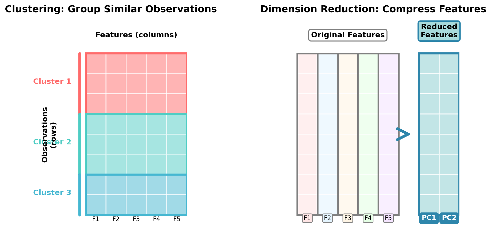
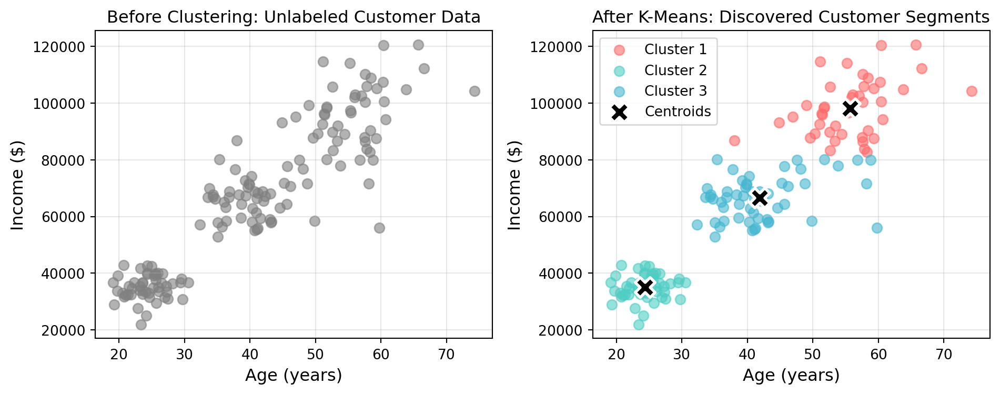
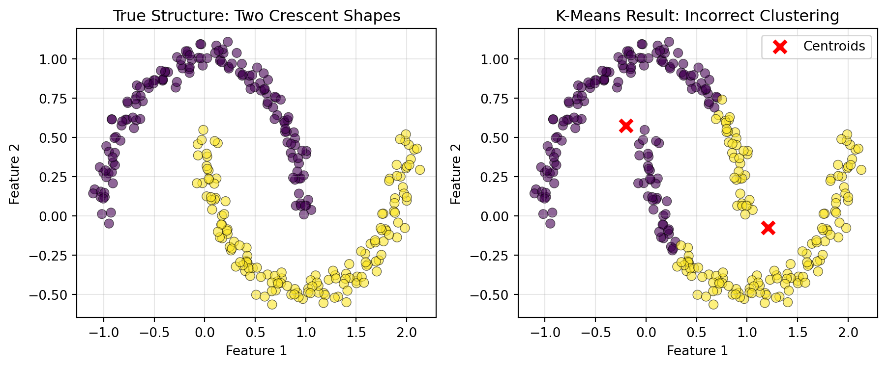
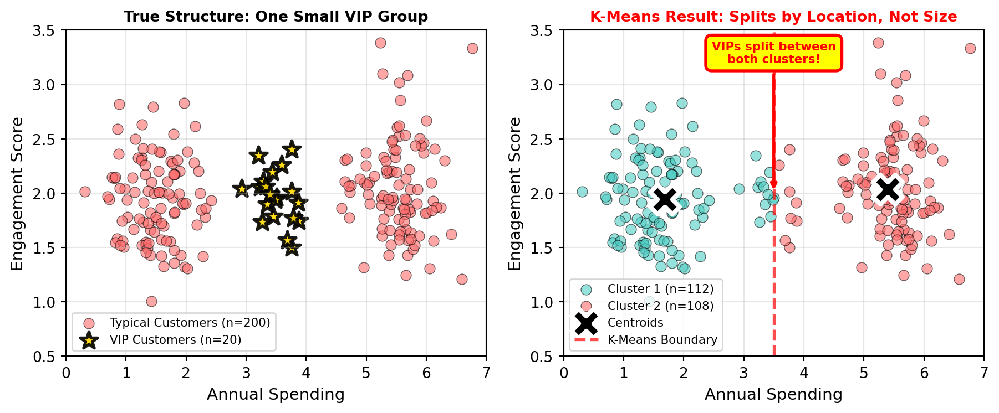
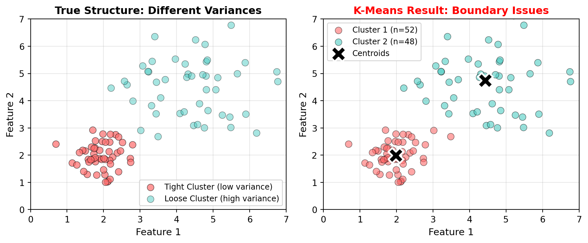
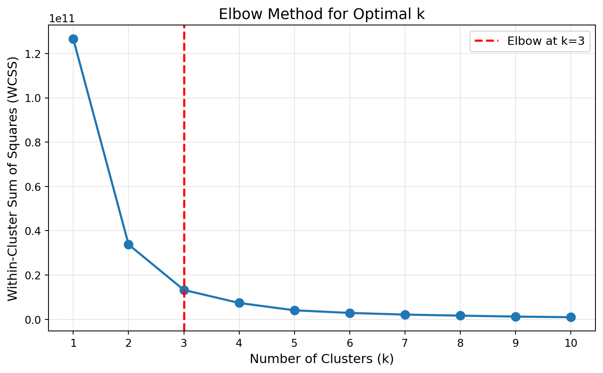
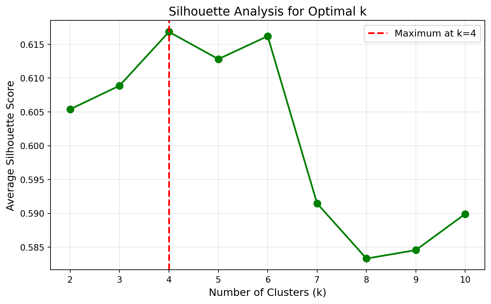
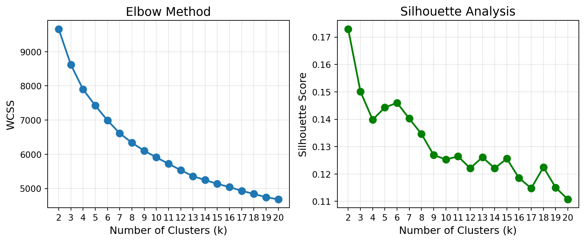
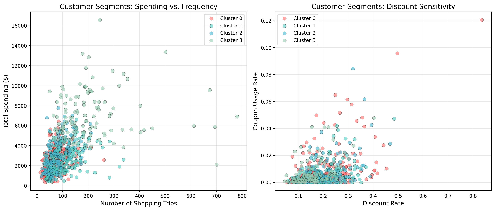

31 Unsupervised Learning and Clustering
Think back to all the models you’ve built so far in this course. Whether predicting house prices with regression, classifying loan defaults with logistic regression, or diagnosing heart disease with decision trees, they all had one thing in common: you always had a target variable—a known outcome you were trying to predict. This is called supervised learning because you’re essentially supervising the algorithm by showing it examples of “correct answers” during training.
But what if you don’t have labels? What if you have customer data but no predetermined segments, or transaction records with no indication of which patterns are normal versus fraudulent? This is where unsupervised learning comes in—algorithms that discover hidden structures and patterns in data without being told what to look for.
TipRemember These Terms?
The distinction between supervised and unsupervised learning should feel familiar—we first introduced these concepts back in Chapter 19. Since then, we’ve been focusing exclusively on supervised learning methods: regression, classification, and ensemble techniques. In this chapter and the next, we’re shifting our focus to unsupervised learning, exploring how algorithms can discover patterns and structure in data without labeled outcomes to guide them.
This chapter introduces you to one of the most powerful and widely-used unsupervised learning techniques: clustering. You’ll learn how clustering algorithms automatically group similar observations together, revealing natural segments in your data that weren’t obvious before. We’ll focus primarily on K-Means clustering—the workhorse algorithm for customer segmentation, market analysis, and exploratory data analysis.
Through a comprehensive case study using real grocery store transaction data, you’ll master the complete clustering workflow: engineering behavioral features from raw transactions, selecting the optimal number of clusters (even when the answer is ambiguous), interpreting cluster profiles, and translating statistical findings into actionable marketing strategies. You’ll also learn when K-Means works well, when its assumptions break down, and what alternative methods exist for more complex data structures.
NoteLearning Objectives
By the end of this chapter, you will be able to:
- Explain the difference between supervised and unsupervised learning and when each is appropriate
- Understand how the K-Means algorithm groups similar observations through iterative centroid updates
- Implement K-Means clustering using scikit-learn’s
KMeansclass and interpret key attributes - Engineer behavioral features from transactional data for customer segmentation
- Use the elbow method and silhouette scores to select the number of clusters—and understand when results are ambiguous
- Apply proper feature scaling to ensure all features contribute equally to clustering
- Handle categorical variables through ordinal and one-hot encoding
- Interpret cluster profiles by analyzing both behavioral and demographic characteristics
- Translate statistical clusters into actionable business strategies
- Recognize K-Means assumptions and when alternative methods (hierarchical, DBSCAN) might be more appropriate
- Apply the complete clustering workflow to real-world grocery retail data
NoteFollow along in Colab
As you read through this chapter, we encourage you to follow along using the companion notebook in Google Colab (or another editor of your choice). This interactive notebook lets you run all the code examples covered here—and experiment with your own ideas.
👉 Open the Clustering Notebook in Colab.
31.1 Introduction to Unsupervised Learning
Quick Refresh: What Is Unsupervised Learning?
Throughout this course, you’ve been building supervised learning models—algorithms that learn from labeled training data where the outcome is known. You had house prices to predict, disease diagnoses to classify, and customer defaults to forecast. The “supervision” comes from having these known outcomes guide the learning process.
Unsupervised learning flips this paradigm. Instead of predicting a known outcome, unsupervised algorithms explore the data itself to discover hidden patterns, structures, and relationships. There’s no target variable, no correct answer to check against—just data waiting to reveal its natural organization.
Consider these contrasting scenarios:
| Supervised Learning | Unsupervised Learning |
|---|---|
| “Given customer features, predict if they’ll churn (yes/no)” | “Given customer features, discover natural customer segments” |
| “Given email content, classify as spam or not spam” | “Given document text, group similar documents together” |
| “Given patient symptoms, diagnose disease (known conditions)” | “Given patient symptoms, identify patterns that might represent new disease subtypes” |
| You have labeled data | You have unlabeled data |
| Goal: Predict outcomes | Goal: Discover structure |
When and Why We Use It
Unsupervised learning shines in several important business contexts where labels are expensive, unavailable, or not yet defined:
1. Exploratory Data Analysis: When you first encounter a new dataset, unsupervised methods help you understand its structure before building predictive models. You might discover that your customers naturally fall into 4-5 distinct groups, which could inform feature engineering for subsequent supervised learning.
2. Discovering Hidden Patterns: Sometimes the most interesting insights aren’t about predicting known outcomes, but about revealing patterns you didn’t know existed. Retail companies use clustering to discover unexpected customer segments, healthcare researchers use it to identify disease subtypes, and fraud analysts use it to detect anomalous transaction patterns.
3. Preprocessing for Supervised Learning: Unsupervised methods can create features for supervised models. For example, you might cluster customers into segments, then use those cluster labels as categorical features in a churn prediction model.
4. When Labels Are Expensive: Labeling data is often costly and time-consuming. Medical diagnoses require expert physicians, customer satisfaction requires surveys, and fraud detection requires investigation. Unsupervised methods can work with the abundant unlabeled data you already have.
5. Dimension Reduction: When you have hundreds or thousands of features, unsupervised techniques can compress them into a smaller set while preserving important information (this is beyond the scope of this chapter but we’ll touch on it in the next chapter).
ImportantThe Tradeoff: Insight vs. Prediction
Unsupervised learning trades prediction accuracy for discovery potential:
- Supervised learning asks: “Can I accurately predict this outcome?”
- Unsupervised learning asks: “What interesting structure exists in this data?”
Both are valuable, but they serve different purposes. You can’t evaluate unsupervised methods using accuracy or RMSE because there’s no ground truth to compare against. Instead, you evaluate them based on interpretability, actionability, and how well the discovered patterns align with business goals.
Two Main Types of Unsupervised Learning
While unsupervised learning encompasses many techniques, two categories dominate business applications:
1. Clustering: Grouping Similar Observations
Clustering algorithms partition data into groups (clusters) where observations within each group are more similar to each other than to observations in other groups. Think of it as automatic categorization:
- Customer segmentation: Group customers by purchasing behavior, demographics, or engagement patterns
- Market segmentation: Identify distinct market segments for targeted marketing campaigns
- Document organization: Automatically group similar news articles, research papers, or support tickets
- Image compression: Group similar pixels to reduce image file sizes
- Anomaly detection: Identify observations that don’t fit well into any cluster
This chapter focuses primarily on clustering, with emphasis on the K-Means algorithm—the most widely-used clustering method in business applications.
2. Dimension Reduction: Simplifying Complex Data
Dimension reduction techniques compress many features into fewer dimensions while preserving as much information as possible:
- Principal Component Analysis (PCA): Find linear combinations of features that capture maximum variance
- t-SNE and UMAP: Create 2D or 3D visualizations of high-dimensional data
- Autoencoders: Neural networks that learn compressed representations
These methods are particularly valuable when you have hundreds of features and need to visualize the data or reduce computational costs. While we won’t cover dimension reduction in depth in this chapter, know that it’s a powerful complement to clustering.
Visualizing the Difference: Rows vs. Columns
To understand the distinction between clustering and dimension reduction, it helps to think about how each operates on your data matrix:
Key Insight:
- Clustering works across rows (observations), asking: “Which customers/patients/transactions are similar to each other?”
- Dimension reduction works across columns (features), asking: “Which features can we combine or eliminate while preserving information?”
Both techniques help make sense of complex data, but they operate in perpendicular directions!
NoteKnowledge Check: Supervised vs. Unsupervised
For each scenario below, determine whether supervised or unsupervised learning is most appropriate, and explain your reasoning:
Scenario A: A hospital has electronic health records for 10,000 patients, including lab results, vital signs, medications, and diagnoses (disease names). They want to predict which patients are at risk for readmission within 30 days.
Scenario B: A streaming music service has listening history for millions of users (songs played, skip rates, listening duration) but no explicit labels about user preferences. They want to create personalized playlists.
Scenario C: An e-commerce company has millions of customer transactions with product purchases, but they don’t have predefined customer segments. They want to understand their customer base better for targeted marketing.
Click to reveal answer
Scenario A: Supervised Learning - This is a clear supervised learning problem. The hospital has a labeled outcome (readmission within 30 days: yes/no) and wants to predict it for new patients. They would build a classification model using features like lab results and vital signs to predict the readmission target variable.
Scenario B: Could be either, but likely unsupervised initially - While this could involve supervised learning if users explicitly rate songs (creating labels), the scenario describes unlabeled listening data. The music service would likely start with unsupervised methods like clustering to discover user taste profiles, then potentially use those clusters as features in supervised recommendation models. Collaborative filtering (often unsupervised) would help create playlists by finding users with similar listening patterns.
Scenario C: Unsupervised Learning (Clustering) - This is a textbook unsupervised learning problem. There are no predefined labels or segments—the company wants to discover natural customer groupings that emerge from purchasing behavior. Clustering algorithms would reveal segments like “bargain hunters,” “brand loyalists,” or “occasional shoppers” without being told what to look for. These discovered segments then inform marketing strategies.
31.3 The K-Means Algorithm
K-Means is the most widely-used clustering algorithm in business applications, beloved for its simplicity, speed, and effectiveness. Despite its straightforward approach, K-Means powers customer segmentation at major retailers, image compression in software, and countless other real-world applications.
Step-by-Step Overview
The K-Means algorithm follows an elegant iterative process that’s easy to understand and visualize. Let’s walk through exactly how it works:
Step 1: Choose k clusters
Before running the algorithm, you must specify k—the number of clusters you want. This is both a strength (you control the granularity) and a challenge (you need to choose wisely). We’ll discuss how to select k in the next section, but for now, let’s say we’ve chosen k=3 clusters.
Step 2: Initialize k centroids
The algorithm randomly places k centroid points in your feature space. These initial placements are random, which means K-Means can produce different results on different runs (we’ll address this with random_state). Think of these centroids as the initial “guesses” for where cluster centers should be.
Step 3: Assign points to nearest centroid
For each observation in your dataset, calculate the distance to each centroid and assign the observation to the closest one. After this step, every observation has been assigned to exactly one cluster.
Step 4: Update centroids
For each cluster, calculate the mean (average) of all observations assigned to it. Move the centroid to this new average position. This is why it’s called K-“Means”—the centroids represent the mean of their assigned points.
Step 5: Repeat until convergence
Go back to Step 3 and repeat the assign-update cycle. With each iteration, observations might switch clusters as centroids move. Eventually, the centroids stop moving (or move only trivially), meaning we’ve reached convergence—a stable solution where assignments no longer change.
Convergence criteria: The algorithm stops when either:
- No observations change cluster assignments between iterations
- Centroids move less than a tiny threshold distance
- A maximum number of iterations is reached
ImportantK-Means Is Not Deterministic
Because K-Means starts with random centroid positions, running it multiple times on the same data can produce different results. Some initializations lead to better final clusters than others. Scikit-learn addresses this by running the algorithm multiple times (default: 10 times) with different random initializations and keeping the best result (lowest WCSS). You can control this with the n_init parameter.
Always set random_state for reproducibility in your code.
Visual Example of Clustering in 2D
Let’s see K-Means in action with a simple visual example. We’ll create synthetic customer data with two features (age and income) and watch the algorithm discover natural groupings.
Synthetic data creation
import numpy as np
import pandas as pd
import matplotlib.pyplot as plt
from sklearn.cluster import KMeans
# Set random seed for reproducibility
np.random.seed(42)
# Generate three distinct customer groups
# Group 1: Young, lower income (students/entry-level)
group1_age = np.random.normal(25, 3, 50)
group1_income = np.random.normal(35000, 5000, 50)
# Group 2: Middle-aged, moderate income (professionals)
group2_age = np.random.normal(40, 4, 50)
group2_income = np.random.normal(65000, 8000, 50)
# Group 3: Older, higher income (executives/established)
group3_age = np.random.normal(55, 5, 50)
group3_income = np.random.normal(95000, 12000, 50)
# Combine into single dataset
age = np.concatenate([group1_age, group2_age, group3_age])
income = np.concatenate([group1_income, group2_income, group3_income])
# Create DataFrame
customer_data = pd.DataFrame({
'age': age,
'income': income
})
customer_data.head()| age | income | |
|---|---|---|
| 0 | 26.490142 | 36620.419847 |
| 1 | 24.585207 | 33074.588598 |
| 2 | 26.943066 | 31615.389998 |
| 3 | 29.569090 | 38058.381444 |
| 4 | 24.297540 | 40154.997612 |
Now let’s visualize the data before and after clustering:
Clustering illustration
# Fit K-Means with k=3
kmeans = KMeans(n_clusters=3, random_state=42, n_init=10)
customer_data['cluster'] = kmeans.fit_predict(customer_data[['age', 'income']])
# Get cluster centers
centers = kmeans.cluster_centers_
# Create side-by-side plots
fig, axes = plt.subplots(1, 2, figsize=(10, 4))
# Left plot: Original data (no clusters visible)
axes[0].scatter(customer_data['age'], customer_data['income'],
alpha=0.6, s=50, color='gray')
axes[0].set_xlabel('Age (years)', fontsize=12)
axes[0].set_ylabel('Income ($)', fontsize=12)
axes[0].set_title('Before Clustering: Unlabeled Customer Data', fontsize=12)
axes[0].grid(True, alpha=0.3)
# Right plot: After clustering with centroids
colors = ['#FF6B6B', '#4ECDC4', '#45B7D1']
for i in range(3):
cluster_data = customer_data[customer_data['cluster'] == i]
axes[1].scatter(cluster_data['age'], cluster_data['income'],
alpha=0.6, s=50, color=colors[i], label=f'Cluster {i+1}')
# Plot centroids
axes[1].scatter(centers[:, 0], centers[:, 1],
marker='X', s=200, c='black', edgecolors='white', linewidths=2,
label='Centroids', zorder=5)
axes[1].set_xlabel('Age (years)', fontsize=12)
axes[1].set_ylabel('Income ($)', fontsize=12)
axes[1].set_title('After K-Means: Discovered Customer Segments', fontsize=12)
axes[1].legend(fontsize=10)
axes[1].grid(True, alpha=0.3)
plt.tight_layout()
plt.show()
# Print cluster summaries
print("\nCluster Summaries:")
for i in range(3):
cluster_data = customer_data[customer_data['cluster'] == i]
print(f"\nCluster {i+1}:")
print(f" Size: {len(cluster_data)} customers")
print(f" Average age: {cluster_data['age'].mean():.1f} years")
print(f" Average income: ${cluster_data['income'].mean():,.0f}")
Cluster Summaries:
Cluster 1:
Size: 43 customers
Average age: 55.6 years
Average income: $98,232
Cluster 2:
Size: 50 customers
Average age: 24.3 years
Average income: $35,089
Cluster 3:
Size: 57 customers
Average age: 41.9 years
Average income: $66,612The visualization demonstrates K-Means’ fundamental behavior: it discovered three natural groupings in customer data that weren’t explicitly labeled. The left plot shows the raw data—you can see there are groups, but they’re not formally defined. The right plot shows K-Means’ solution: three distinct clusters with centroids (marked with X) at each cluster’s center.
Notice how the algorithm created three sensible customer segments:
- Cluster 1: Younger customers with lower incomes (entry-level workers)
- Cluster 2: Middle-aged customers with moderate incomes (established professionals)
- Cluster 3: Older customers with higher incomes (senior professionals/executives)
These segments emerged purely from the age and income patterns—K-Means identified the natural groupings without being told what to look for.
TipAnimated Visualization of K-Means
For an excellent animated visualization showing how K-Means iteratively updates centroids and assignments, see this interactive demo or this Stanford visualization. Watching the centroids move and clusters form/reform gives great intuition for the algorithm’s behavior.
Implementing K-Means in scikit-learn
Now that you understand how K-Means works conceptually, let’s see how easy it is to apply in Python using scikit-learn. The process follows a familiar pattern if you’ve used scikit-learn for supervised learning.
Basic K-Means Workflow:
Create synthetic customer data
# Create sample customer data
np.random.seed(42)
n_customers = 150
customer_data = pd.DataFrame({
'customer_id': range(1, n_customers + 1),
'age': np.random.randint(20, 70, n_customers),
'annual_income': np.random.randint(20000, 120000, n_customers),
'purchase_frequency': np.random.randint(1, 50, n_customers)
})from sklearn.cluster import KMeans
from sklearn.preprocessing import StandardScaler
import pandas as pd
import numpy as np
# Step 1: Prepare your data (features only, no target variable)
# Assume we have a DataFrame with customer features
X = customer_data[['age', 'annual_income', 'purchase_frequency']]
# Step 2: Scale your features (IMPORTANT!)
scaler = StandardScaler()
X_scaled = scaler.fit_transform(X)
# Step 3: Create and fit the K-Means model
kmeans = KMeans(
n_clusters=3, # Number of clusters
random_state=42, # For reproducibility
n_init=10 # Number of different initializations (default=10)
)
kmeans.fit(X_scaled)
# Step 4: Get cluster assignments
customer_data['cluster'] = kmeans.predict(X_scaled)
customer_data.head()| customer_id | age | annual_income | purchase_frequency | cluster | |
|---|---|---|---|---|---|
| 0 | 1 | 58 | 43419 | 33 | 2 |
| 1 | 2 | 48 | 70636 | 24 | 0 |
| 2 | 3 | 34 | 70015 | 11 | 1 |
| 3 | 4 | 62 | 74268 | 49 | 2 |
| 4 | 5 | 27 | 107939 | 8 | 1 |
Key Parameters to Know:
n_clusters: The number of clusters (k). You must specify this upfront.random_state: Sets the random seed for reproducibility. Always use this for consistent results.n_init: Number of times K-Means runs with different centroid initializations. The best result (lowest WCSS) is kept. Default is 10.max_iter: Maximum iterations for convergence. Default is 300 (usually more than enough).
Accessing Results:
After fitting, the K-Means object contains useful attributes and we can even make predictions on which cluster a new customer aligns to:
# Get cluster centers (centroids)
centroids = kmeans.cluster_centers_
print("Cluster centroids shape:", centroids.shape) # (n_clusters, n_features)
# Get cluster labels for training data
labels = kmeans.labels_
print("Cluster assignments:", labels[:10]) # First 10 assignments
# Get WCSS (inertia)
wcss = kmeans.inertia_
print(f"Within-Cluster Sum of Squares: {wcss:.2f}")
# Predict cluster for new data
new_customer = pd.DataFrame([[35, 60000, 12]], columns=['age', 'annual_income', 'purchase_frequency'])
new_customer_scaled = scaler.transform(new_customer)
predicted_cluster = kmeans.predict(new_customer_scaled)
print(f"New customer assigned to cluster: {predicted_cluster[0]}")Cluster centroids shape: (3, 3)
Cluster assignments: [2 0 1 2 1 2 0 1 1 1]
Within-Cluster Sum of Squares: 254.15
New customer assigned to cluster: 1
ImportantDon’t Forget Feature Scaling!
Notice that we always scale features before applying K-Means. This is critical! Without scaling, features with larger numeric ranges (like income) will dominate the clustering, making other features (like age) virtually irrelevant. We’ll explore this in detail in the “Practical Considerations” section.
Key Assumptions and Limitations
While K-Means is powerful and widely applicable, it makes certain assumptions that don’t always hold in real data. Understanding these limitations helps you recognize when K-Means is appropriate and when alternative methods might work better.
WarningAssumption 1: Clusters are spherical (roughly circular)
K-Means works best when clusters form compact, roughly circular groups. Because it uses Euclidean distance and assigns points to the nearest centroid, it naturally creates spherical-shaped clusters.
Problem: Real data often forms non-spherical patterns—elongated clusters, crescents, or nested shapes. K-Means will struggle with these.

Solution: Alternative clustering algorithms such as DBSCAN (Density-based Spatial Clustering of Applications with Noise) have been developed to capture non-circular clusters.
WarningAssumption 2: Clusters are roughly equal in size
K-Means tends to create clusters with similar numbers of observations because each point is assigned to its nearest centroid. This can cause problems when natural groups have very different sizes.
Problem: If you have 1,000 typical customers and 50 VIP customers, K-Means might split the typical customers into multiple clusters instead of keeping the small VIP cluster intact.

Solution: If you know certain groups should remain intact regardless of size, consider:
- Using DBSCAN, which doesn’t assume equal cluster sizes
- Manually segmenting the VIP group first, then clustering the remainder
- Using hierarchical clustering with specific linkage criteria
WarningAssumption 3: Clusters have similar variance (spread)
K-Means assumes clusters are roughly equally “spread out.” Clusters with very different densities or sizes can confuse the algorithm.
Problem: A tight cluster of 20 observations might get absorbed into a nearby large, diffuse cluster of 200 observations, even if they’re conceptually distinct groups.

Solution:
- Use Gaussian Mixture Models (GMM), which allow clusters to have different variances
- Consider hierarchical clustering with appropriate linkage methods
- Standardize features, though this doesn’t fully solve variance differences
WarningAssumption 4: Features are on comparable scales
This is perhaps the most important practical consideration. K-Means uses Euclidean distance, which means features with larger numeric ranges will dominate the clustering.
Problem: If you cluster customers using age (20-80) and income (20,000-200,000), income differences will completely dominate age differences because income values are much larger. A 10-year age gap means little compared to a $10,000 income gap, even though both might be equally important for segmentation.
We already visualized this problem earlier in the Euclidean distance section, where we saw that income contributed 4 million times more to the distance calculation than age!
Solution: Always scale your features before clustering. We’ll cover this in detail in the “Practical Considerations” section, where you’ll see the dramatic difference feature scaling makes.
TipWhen to Consider Alternatives to K-Means
If your data violates K-Means assumptions, consider these alternatives:
- Non-spherical clusters: Use DBSCAN (density-based clustering) or hierarchical clustering
- Varying cluster sizes/densities: Use DBSCAN or Gaussian Mixture Models
- Uncertain number of clusters: Use hierarchical clustering to explore different k values simultaneously
- Categorical features: Use K-Modes or K-Prototypes instead of K-Means
We’ll briefly cover these alternatives later in the chapter.
31.4 Choosing the Right Number of Clusters
One of K-Means’ biggest challenges is that you must specify k (the number of clusters) before running the algorithm. But how do you know how many clusters exist in your data? Should you segment customers into 3 groups? 5 groups? 10 groups? Unlike supervised learning where you can measure accuracy against known labels, clustering has no ground truth to validate against. This makes selecting k both an art and a science, combining quantitative methods with business judgment.
Why Selecting k Is Challenging
The number of clusters you choose fundamentally shapes your results:
Too few clusters (k too small): You’ll miss important distinctions in your data. For example, clustering customers into just 2 groups might combine high-spending young professionals with high-spending retirees, even though they need different marketing strategies.
Too many clusters (k too large): You’ll create overly granular segments that are hard to act on. Imagine discovering 25 customer segments—your marketing team can’t create 25 different campaigns, and many segments will be too small to matter.
No single “correct” answer: The “best” k depends on your goals. A market researcher might want 3-5 interpretable segments, while a recommendation system might use 20+ clusters for fine-grained personalization.
This is fundamentally different from supervised learning, where you can calculate accuracy or RMSE and definitively say Model A is better than Model B. With clustering, “better” depends on your business objectives, interpretability needs, and the tradeoff between detail and actionability.
The Elbow Method
The elbow method is the most popular quantitative approach for selecting k. It helps you visualize the tradeoff between cluster count and cluster quality.
How it works:
- Run K-Means for different values of k (typically k=1 through k=10 or k=15)
- For each k, calculate the Within-Cluster Sum of Squares (WCSS)—the total squared distance from each point to its cluster centroid
- Plot k on the x-axis and WCSS on the y-axis
- Look for the “elbow”—the point where WCSS stops decreasing rapidly
Why WCSS decreases with k: More clusters means smaller, tighter groups, so WCSS naturally decreases. At the extreme, if k equals the number of observations, WCSS is zero (each point is its own cluster). But this overfits completely!
The elbow point: Look for where the WCSS curve bends—where adding more clusters gives diminishing returns. This suggests a natural grouping in the data.
Let’s demonstrate with our customer data:
# Calculate WCSS for different values of k
wcss = []
k_range = range(1, 11)
for k in k_range:
kmeans_temp = KMeans(n_clusters=k, random_state=42, n_init=10)
kmeans_temp.fit(customer_data[['age', 'annual_income']])
wcss.append(kmeans_temp.inertia_) # inertia_ is scikit-learn's name for WCSS
# Plot elbow curve
plt.figure(figsize=(8, 5))
plt.plot(k_range, wcss, marker='o', linewidth=2, markersize=8)
plt.xlabel('Number of Clusters (k)', fontsize=12)
plt.ylabel('Within-Cluster Sum of Squares (WCSS)', fontsize=12)
plt.title('Elbow Method for Optimal k', fontsize=14)
plt.grid(True, alpha=0.3)
plt.xticks(k_range)
# Highlight the elbow at k=3
plt.axvline(x=3, color='red', linestyle='--', linewidth=2, label='Elbow at k=3')
plt.legend(fontsize=11)
plt.tight_layout()
plt.show()
print("WCSS values:")
for k, wcss_val in zip(k_range, wcss):
print(f" k={k}: WCSS = {wcss_val:,.0f}")
WCSS values:
k=1: WCSS = 126,552,534,350
k=2: WCSS = 33,757,522,560
k=3: WCSS = 13,262,950,265
k=4: WCSS = 7,384,215,611
k=5: WCSS = 4,073,559,733
k=6: WCSS = 2,884,717,759
k=7: WCSS = 2,138,310,306
k=8: WCSS = 1,664,123,578
k=9: WCSS = 1,232,399,430
k=10: WCSS = 947,366,531In the elbow plot above, notice how WCSS drops sharply from k=1 to k=3, then the rate of decrease slows significantly. The “elbow” occurs around k=3, suggesting three natural clusters in the data—which aligns with how we generated the data (three distinct customer groups).
Interpreting the elbow:
- Steep drop: Large improvement in cluster quality
- Gradual decrease: Diminishing returns from additional clusters
- Elbow point: Best balance between cluster count and quality
NoteThe Elbow Is Not Always Clear
Real data often produces elbow plots without obvious bends. The curve might decrease smoothly without a distinct elbow, or you might see multiple potential elbow points. In these cases:
- Try complementary methods like silhouette scores (covered next)
- Consider business constraints (can you realistically act on 8 segments?)
- Test a few values of k and compare the interpretability of results
- Remember that k selection involves judgment, not just optimization
Silhouette Scores and Interpretation
While the elbow method focuses on cluster compactness (WCSS), silhouette scores measure both compactness and separation—how well-separated different clusters are from each other.
What silhouette scores measure: For each observation, the silhouette score compares:
- a: Average distance to other points in the same cluster (how compact is my cluster?)
- b: Average distance to points in the nearest different cluster (how separated am I from other clusters?)
The silhouette score for an observation is:
\[s = \frac{b - a}{\max(a, b)}\]
Score interpretation:
- s close to +1: The observation is well-matched to its cluster and far from other clusters (excellent)
- s close to 0: The observation is on the border between clusters (ambiguous)
- s close to -1: The observation might be in the wrong cluster (poor clustering)
The average silhouette score across all observations measures overall clustering quality:
- 0.71 - 1.0: Strong, well-separated clusters
- 0.51 - 0.70: Reasonable structure, clusters are somewhat separated
- 0.26 - 0.50: Weak structure, clusters overlap considerably
- < 0.25: No substantial structure detected
Let’s calculate silhouette scores for different values of k:
from sklearn.metrics import silhouette_score
# Calculate silhouette scores for k=2 through k=10
silhouette_scores = []
k_range_sil = range(2, 11) # Need at least 2 clusters for silhouette
for k in k_range_sil:
kmeans_temp = KMeans(n_clusters=k, random_state=42, n_init=10)
cluster_labels = kmeans_temp.fit_predict(customer_data[['age', 'annual_income']])
silhouette_avg = silhouette_score(customer_data[['age', 'annual_income']], cluster_labels)
silhouette_scores.append(silhouette_avg)
# Plot silhouette scores
plt.figure(figsize=(8, 5))
plt.plot(k_range_sil, silhouette_scores, marker='o', linewidth=2, markersize=8, color='green')
plt.xlabel('Number of Clusters (k)', fontsize=12)
plt.ylabel('Average Silhouette Score', fontsize=12)
plt.title('Silhouette Analysis for Optimal k', fontsize=14)
plt.grid(True, alpha=0.3)
plt.xticks(k_range_sil)
# Highlight the maximum
max_k = k_range_sil[silhouette_scores.index(max(silhouette_scores))]
plt.axvline(x=max_k, color='red', linestyle='--', linewidth=2,
label=f'Maximum at k={max_k}')
plt.legend(fontsize=11)
plt.tight_layout()
plt.show()
print("Silhouette scores:")
for k, score in zip(k_range_sil, silhouette_scores):
print(f" k={k}: Silhouette = {score:.3f}")
Silhouette scores:
k=2: Silhouette = 0.605
k=3: Silhouette = 0.609
k=4: Silhouette = 0.617
k=5: Silhouette = 0.613
k=6: Silhouette = 0.616
k=7: Silhouette = 0.591
k=8: Silhouette = 0.583
k=9: Silhouette = 0.585
k=10: Silhouette = 0.590Interpreting the results: Interestingly, the silhouette analysis suggests k=4 as optimal (highest silhouette score around 0.617), while the elbow method suggested k=3. This is actually quite common and highlights an important point: different methods can suggest different optimal values of k.
Why do the methods disagree?
Elbow method focuses on minimizing within-cluster variance (WCSS). It identified k=3 as the point where adding more clusters provides diminishing returns in compactness.
Silhouette method balances both compactness and separation between clusters. It found that k=4 creates clusters that are both internally cohesive and well-separated from each other.
The silhouette scores show that k=3, k=4, k=5, and k=6 all have similar scores (between 0.609 and 0.617), suggesting there isn’t one definitively “best” choice based purely on statistics.
So which should you choose? This is where clustering becomes as much art as science. Both k=3 and k=4 are defensible choices. You might:
- Choose k=3 if you prefer simpler, broader customer segments that are easier for marketing teams to manage
- Choose k=4 if the additional granularity provides more actionable insights
- Actually fit both models and examine which produces more interpretable, business-relevant segments
Using elbow + silhouette together:
- Use the elbow method to identify a range of candidate k values (here: k=3 to k=6)
- Use silhouette scores to evaluate cluster quality within that range (here: all similar, slight edge to k=4)
- Consider business context to finalize your choice (can your team act on 3 vs 4 segments?)
- Examine actual cluster profiles for both options to see which tells a clearer story
TipPractical Advice for Choosing k
- Start with domain knowledge: Do you expect 3 customer types based on business intuition? Start there.
- Use elbow + silhouette to validate or refine your intuition
- Consider business constraints: Can you actually create different strategies for 8 segments?
- Try multiple values: Build models with k=3, k=4, and k=5, then compare interpretability
- Iterate: Clustering is exploratory—you can refine k as you learn more about the data
Remember: The goal isn’t to find the “mathematically optimal” k, but rather the k that produces actionable, interpretable insights for your business problem.
31.5 Practical Considerations
Before you can successfully apply K-Means to real business data, you need to address several practical challenges that can significantly impact your results. These considerations—feature scaling, random initialization, and handling outliers—are often the difference between clustering that reveals genuine insights and clustering that produces meaningless noise.
Feature Scaling: A Critical Reminder
ImportantAlways Scale Before K-Means Clustering
Remember from our earlier discussion on K-Means assumptions: features must be on comparable scales. Since K-Means uses Euclidean distance, features with larger numeric ranges will dominate the clustering, making smaller-scale features virtually irrelevant.
Standard workflow:
- Scale your features using
StandardScaler - Fit K-Means on the scaled data
- Interpret results using the original feature scales
from sklearn.preprocessing import StandardScaler
scaler = StandardScaler()
X_scaled = scaler.fit_transform(X)
kmeans = KMeans(n_clusters=3, random_state=42)
kmeans.fit(X_scaled)Random Initialization and random_state
K-Means starts by randomly placing k centroids in your feature space. This randomness means running the algorithm multiple times can produce different results—sometimes significantly different.
Why this happens: The initial random placement can lead to different local optima. Imagine two starting configurations:
- Good initialization: Random centroids happen to land near the true cluster centers, and the algorithm quickly converges to a sensible solution
- Poor initialization: Random centroids land in awkward positions, and the algorithm gets stuck in a suboptimal configuration
Scikit-learn’s solution: By default, KMeans uses the k-means++ initialization algorithm, which chooses initial centroids smartly to be far apart from each other. Additionally, it runs the entire K-Means algorithm 10 times (controlled by n_init=10) with different random starts and keeps the best result (lowest WCSS).
For reproducibility: Always set random_state in your code:
kmeans = KMeans(n_clusters=3, random_state=42, n_init=10)This ensures:
- Your results are reproducible
- Collaborators can verify your findings
- Your code produces consistent results in production
TipTuning
n_init for Better Results
If you have time and computational resources, increasing n_init from 10 to 50 or 100 can help find better clusterings, especially with challenging datasets. However, the default of 10 is usually sufficient for most business applications, especially when using k-means++ initialization.
Handling Outliers and Non-Spherical Clusters
K-Means is sensitive to outliers and struggles with non-spherical cluster shapes. Understanding these limitations helps you preprocess data appropriately or recognize when alternative algorithms are needed.
Outlier sensitivity: Extreme values pull centroids toward them, distorting clusters. A single customer with $10 million income in a dataset of mostly $30k-$100k incomes will skew the high-income cluster centroid.
Strategies for handling outliers:
- Remove extreme outliers before clustering (but document this decision)
- Winsorize features (cap extreme values at percentiles like 1st and 99th)
- Use robust scaling (e.g.,
RobustScalerinstead ofStandardScaler) - Consider alternative algorithms like DBSCAN that are inherently robust to outliers
Non-spherical clusters: We saw earlier how K-Means fails on crescent-shaped clusters. Real business data often exhibits:
- Elongated clusters: Customer segments that stretch along one dimension
- Nested clusters: Premium customers forming a small cluster within broader markets
- Irregularly shaped groups: Geographic regions, time-series patterns
For such data, consider:
- Hierarchical clustering: Builds trees of clusters, handling various shapes
- DBSCAN: Finds dense regions of any shape
- Gaussian Mixture Models: Allows elliptical (elongated) clusters
We’ll briefly cover these alternatives later in this chapter.
WarningDon’t Force K-Means on Inappropriate Data
If exploratory visualization reveals clearly non-spherical patterns, crescent shapes, or highly varying cluster densities, K-Means likely isn’t the right tool. Forcing it will produce mathematically “optimal” but meaningless results. This is one reason why visualizing your data (at least in 2D projections) before clustering is valuable.
31.6 Other Clustering Techniques (Overview)
While K-Means is the workhorse of business clustering, alternative algorithms handle situations where K-Means assumptions don’t hold. You don’t need to master these techniques in this course, but understanding when they’re useful will make you a more versatile data scientist.
When to Use Alternatives to K-Means
Here’s a decision guide for choosing clustering algorithms:
| Situation | Recommended Algorithm | Why |
|---|---|---|
| Spherical, well-separated clusters | K-Means | Fast, interpretable, works well |
| Non-spherical, irregular shapes | DBSCAN or Hierarchical | Handle arbitrary shapes |
| Uncertain about k | Hierarchical or DBSCAN | Explore multiple k or auto-detect |
| Clusters of varying size/density | DBSCAN or Gaussian Mixture | Not constrained to equal sizes |
| Outliers present | DBSCAN | Explicitly identifies outliers |
| Small dataset (< 10k observations) | Hierarchical | Computationally feasible |
| Large dataset (> 100k observations) | K-Means or Mini-Batch K-Means | Scales efficiently |
| Need interpretability | K-Means or Hierarchical | Clear centroids or dendrogram |
TipStart with K-Means, Then Explore
For most business applications, start with K-Means. It’s fast, interpretable, and works well when assumptions hold. If you get poor results or suspect violations of assumptions (visualize your data!), then explore alternatives. Don’t overthink algorithm choice until you’ve validated that K-Means isn’t working.
31.7 Case Study: Complete Journey Customer Segmentation
Let’s apply everything we’ve learned to a real business problem: segmenting grocery store customers using both their purchasing behavior and demographic characteristics. This case study walks through the complete workflow from data preparation to actionable insights using the Complete Journey dataset—a rich collection of transaction data from 801 households tracked over one full year at a grocery retailer.
The Business Problem
A grocery retailer wants to better understand their customer base to personalize marketing campaigns, optimize product placement, and design targeted promotions. They have detailed transaction history and demographic data for hundreds of households but no existing segmentation strategy. The marketing and analytics teams ask:
- What natural customer segments exist based on shopping behavior?
- How do these segments differ in spending, visit frequency, and discount sensitivity?
- Do demographic characteristics align with behavioral patterns?
- Can we create actionable, targeted campaigns for each segment?
We’ll use the Complete Journey dataset to discover these segments using K-Means clustering, combining behavioral features from transactions with demographic attributes.
Loading and Exploring the Data
The Complete Journey dataset includes multiple related tables. For customer segmentation, we’ll primarily use transactions (purchase behavior) and demographics (household characteristics):
import pandas as pd
import numpy as np
from sklearn.cluster import KMeans
from sklearn.preprocessing import StandardScaler
from sklearn.metrics import silhouette_score
import matplotlib.pyplot as plt
import seaborn as sns
from completejourney_py import get_data
# Load the Complete Journey datasets
data = get_data()
transactions = data['transactions']
demographics = data["demographics"]transactions.head()| household_id | store_id | basket_id | product_id | quantity | sales_value | retail_disc | coupon_disc | coupon_match_disc | week | transaction_timestamp | |
|---|---|---|---|---|---|---|---|---|---|---|---|
| 0 | 900 | 330 | 31198570044 | 1095275 | 1 | 0.50 | 0.00 | 0.0 | 0.0 | 1 | 2017-01-01 11:53:26 |
| 1 | 900 | 330 | 31198570047 | 9878513 | 1 | 0.99 | 0.10 | 0.0 | 0.0 | 1 | 2017-01-01 12:10:28 |
| 2 | 1228 | 406 | 31198655051 | 1041453 | 1 | 1.43 | 0.15 | 0.0 | 0.0 | 1 | 2017-01-01 12:26:30 |
| 3 | 906 | 319 | 31198705046 | 1020156 | 1 | 1.50 | 0.29 | 0.0 | 0.0 | 1 | 2017-01-01 12:30:27 |
| 4 | 906 | 319 | 31198705046 | 1053875 | 2 | 2.78 | 0.80 | 0.0 | 0.0 | 1 | 2017-01-01 12:30:27 |
demographics.head()| household_id | age | income | home_ownership | marital_status | household_size | household_comp | kids_count | |
|---|---|---|---|---|---|---|---|---|
| 0 | 1 | 65+ | 35-49K | Homeowner | Married | 2 | 2 Adults No Kids | 0 |
| 1 | 1001 | 45-54 | 50-74K | Homeowner | Unmarried | 1 | 1 Adult No Kids | 0 |
| 2 | 1003 | 35-44 | 25-34K | None | Unmarried | 1 | 1 Adult No Kids | 0 |
| 3 | 1004 | 25-34 | 15-24K | None | Unmarried | 1 | 1 Adult No Kids | 0 |
| 4 | 101 | 45-54 | Under 15K | Homeowner | Married | 4 | 2 Adults Kids | 2 |
The transactions table contains detailed purchase records including quantities, sales values, discounts, and timestamps. The demographics table provides household characteristics like age, income, marital status, home ownership, and household composition.
Feature Engineering and Preprocessing
Our clustering will combine two types of features:
- Behavioral features: Aggregated from transaction data (spending, frequency, basket patterns, discount usage)
- Demographic features: From the demographics table (age, income, household composition)
Let’s start by creating household-level behavioral features. I’ve collapsed this code since its a bit lengthy but feel free to explore it. It results in the following dataframe that contains features such as average basket value, number of trips, unique products purchased, etc. for each household.
Feature engineering
# Step 1: Create behavioral features from transactions
# Convert transaction_timestamp to datetime (suppress warning)
transactions['transaction_timestamp'] = pd.to_datetime(transactions['transaction_timestamp'], format='mixed')
# Find the last date in the dataset for recency calculations
max_date = transactions['transaction_timestamp'].max()
# Aggregate transaction data by household
behavioral_features = transactions.groupby('household_id').agg({
# Spending metrics
'sales_value': ['sum', 'mean'], # Total spending and average transaction value
'basket_id': 'nunique', # Number of unique shopping trips
'product_id': 'nunique', # Number of unique products purchased
# Discount sensitivity
'retail_disc': 'sum', # Total retail discounts used
'coupon_disc': 'sum', # Total coupon discounts used
# Temporal patterns
'transaction_timestamp': ['min', 'max'] # First and last purchase dates
}).reset_index()
# Flatten column names
behavioral_features.columns = ['household_id', 'total_spending', 'avg_basket_value',
'num_trips', 'num_unique_products',
'total_retail_disc', 'total_coupon_disc',
'first_purchase', 'last_purchase']
# Create additional engineered features
behavioral_features['days_active'] = (behavioral_features['last_purchase'] -
behavioral_features['first_purchase']).dt.days + 1
behavioral_features['recency_days'] = (max_date - behavioral_features['last_purchase']).dt.days
behavioral_features['avg_days_between_trips'] = (behavioral_features['days_active'] /
behavioral_features['num_trips'])
# Calculate discount usage rates
behavioral_features['total_discount'] = (behavioral_features['total_retail_disc'] +
behavioral_features['total_coupon_disc'])
behavioral_features['discount_rate'] = (behavioral_features['total_discount'] /
behavioral_features['total_spending'])
behavioral_features['coupon_usage_rate'] = (behavioral_features['total_coupon_disc'] /
behavioral_features['total_spending'])
# Drop temporary date columns
behavioral_features = behavioral_features.drop(['first_purchase', 'last_purchase'], axis=1)
# Step 2: Merge behavioral features with demographics
# The demographics table already has household_id column from completejourney_py
customer_data = behavioral_features.merge(demographics, on='household_id', how='inner')
# Step 3: Encode demographic features
# Map column names (completejourney_py may use different names than CSV files)
col_mapping = {}
for col in customer_data.columns:
lower_col = col.lower()
if 'age' in lower_col and 'age_encoded' not in lower_col:
col_mapping['age'] = col
elif 'income' in lower_col and 'income_encoded' not in lower_col:
col_mapping['income'] = col
elif 'household_size' in lower_col or 'hh_size' in lower_col:
col_mapping['household_size'] = col
elif 'marital' in lower_col:
col_mapping['marital_status'] = col
elif 'homeowner' in lower_col or 'home_owner' in lower_col:
col_mapping['homeowner'] = col
elif 'kid' in lower_col or 'child' in lower_col:
col_mapping['kids'] = col
# Convert age brackets to ordinal numbers
age_map = {
'19-24': 1, '25-34': 2, '35-44': 3, '45-54': 4,
'55-64': 5, '65+': 6
}
customer_data['age_encoded'] = customer_data[col_mapping.get('age', 'age')].map(age_map)
# Convert income brackets to ordinal numbers
income_map = {
'Under 15K': 1, '15-24K': 2, '25-34K': 3, '35-49K': 4,
'50-74K': 5, '75-99K': 6, '100-124K': 7, '125-149K': 8,
'150-174K': 9, '175-199K': 10, '200-249K': 11, '250K+': 12
}
customer_data['income_encoded'] = customer_data[col_mapping.get('income', 'income')].map(income_map)
# Extract household size
hh_size_col = col_mapping.get('household_size', 'household_size')
if customer_data[hh_size_col].dtype == 'object':
customer_data['household_size_num'] = customer_data[hh_size_col].str.extract(r'(\d+)').astype(float)
else:
customer_data['household_size_num'] = customer_data[hh_size_col]
# Extract number of kids
if 'kids' in col_mapping:
kids_col = col_mapping['kids']
if customer_data[kids_col].dtype == 'object':
customer_data['num_kids'] = customer_data[kids_col].replace('None/Unknown', '0')
customer_data['num_kids'] = customer_data['num_kids'].str.extract(r'(\d+)').fillna(0).astype(int)
else:
customer_data['num_kids'] = customer_data[kids_col].fillna(0).astype(int)
else:
customer_data['num_kids'] = 0
# Create binary features
marital_col = col_mapping.get('marital_status', 'marital_status')
customer_data['is_married'] = (customer_data[marital_col] == 'Married').astype(int)
homeowner_col = col_mapping.get('homeowner', 'homeowner')
customer_data['is_homeowner'] = (customer_data[homeowner_col] == 'Homeowner').astype(int)
# Handle missing values - drop rows with missing demographics
customer_data_clean = customer_data.dropna(subset=['age_encoded', 'income_encoded'])
# Step 4: Select features for clustering
cluster_features = [
# Behavioral features
'total_spending',
'avg_basket_value',
'num_trips',
'num_unique_products',
'avg_days_between_trips',
'recency_days',
'discount_rate',
'coupon_usage_rate',
# Demographic features
'age_encoded',
'income_encoded',
'household_size_num',
'num_kids',
'is_married',
'is_homeowner'
]
X_cluster = customer_data_clean[cluster_features]
X_cluster.head()| total_spending | avg_basket_value | num_trips | num_unique_products | avg_days_between_trips | recency_days | discount_rate | coupon_usage_rate | age_encoded | income_encoded | household_size_num | num_kids | is_married | is_homeowner | |
|---|---|---|---|---|---|---|---|---|---|---|---|---|---|---|
| 0 | 2415.56 | 2.459837 | 51 | 437 | 7.039216 | 0 | 0.176862 | 0.023001 | 6 | 4 | 2.0 | 0 | 1 | 1 |
| 1 | 1952.37 | 2.555458 | 32 | 556 | 10.750000 | 5 | 0.151821 | 0.007043 | 4 | 5 | 2.0 | 0 | 1 | 1 |
| 2 | 3080.81 | 2.808396 | 65 | 790 | 5.523077 | 3 | 0.198656 | 0.004658 | 2 | 3 | 3.0 | 1 | 0 | 0 |
| 3 | 7448.22 | 5.659742 | 157 | 656 | 2.305732 | 0 | 0.143786 | 0.023471 | 2 | 6 | 4.0 | 2 | 0 | 1 |
| 4 | 646.87 | 2.967294 | 49 | 129 | 7.387755 | 1 | 0.112758 | 0.000000 | 4 | 5 | 1.0 | 0 | 0 | 1 |
Finding the Optimal Number of Clusters
Let’s use both the elbow method and silhouette analysis:
# Scale the features first
scaler = StandardScaler()
X_cluster_scaled = scaler.fit_transform(X_cluster)
# Elbow method
wcss_values = []
k_range = range(2, 21)
for k in k_range:
kmeans_temp = KMeans(n_clusters=k, random_state=42, n_init=20)
kmeans_temp.fit(X_cluster_scaled)
wcss_values.append(kmeans_temp.inertia_)
# Silhouette scores
sil_scores = []
for k in k_range:
kmeans_temp = KMeans(n_clusters=k, random_state=42, n_init=20)
labels_temp = kmeans_temp.fit_predict(X_cluster_scaled)
sil_score = silhouette_score(X_cluster_scaled, labels_temp)
sil_scores.append(sil_score)
# Plot both methods
fig, axes = plt.subplots(1, 2, figsize=(9.5, 4))
# Elbow plot
axes[0].plot(k_range, wcss_values, marker='o', linewidth=2, markersize=8)
axes[0].set_xlabel('Number of Clusters (k)', fontsize=12)
axes[0].set_ylabel('WCSS', fontsize=12)
axes[0].set_title('Elbow Method', fontsize=14)
axes[0].grid(True, alpha=0.3)
axes[0].set_xticks(k_range)
# Silhouette plot
axes[1].plot(k_range, sil_scores, marker='o', linewidth=2,
markersize=8, color='green')
axes[1].set_xlabel('Number of Clusters (k)', fontsize=12)
axes[1].set_ylabel('Silhouette Score', fontsize=12)
axes[1].set_title('Silhouette Analysis', fontsize=14)
axes[1].grid(True, alpha=0.3)
axes[1].set_xticks(k_range)
plt.tight_layout()
plt.show()
print("\nResults for different k values:")
for k, wcss_val, sil_val in zip(k_range, wcss_values, sil_scores):
print(f" k={k}: WCSS={wcss_val:,.0f}, Silhouette={sil_val:.3f}")
Results for different k values:
k=2: WCSS=9,663, Silhouette=0.173
k=3: WCSS=8,618, Silhouette=0.150
k=4: WCSS=7,898, Silhouette=0.140
k=5: WCSS=7,425, Silhouette=0.144
k=6: WCSS=6,991, Silhouette=0.146
k=7: WCSS=6,616, Silhouette=0.140
k=8: WCSS=6,338, Silhouette=0.135
k=9: WCSS=6,106, Silhouette=0.127
k=10: WCSS=5,911, Silhouette=0.125
k=11: WCSS=5,722, Silhouette=0.126
k=12: WCSS=5,537, Silhouette=0.122
k=13: WCSS=5,359, Silhouette=0.126
k=14: WCSS=5,249, Silhouette=0.122
k=15: WCSS=5,134, Silhouette=0.126
k=16: WCSS=5,043, Silhouette=0.119
k=17: WCSS=4,930, Silhouette=0.115
k=18: WCSS=4,842, Silhouette=0.122
k=19: WCSS=4,744, Silhouette=0.115
k=20: WCSS=4,683, Silhouette=0.111Interpreting the Results: Welcome to Real-World Data!
Notice something important here: unlike the clean textbook examples you might have seen, there’s no obvious “elbow” in the WCSS plot, and the silhouette scores show only modest peaks without a clear winner. The elbow curve decreases gradually without a sharp bend, and silhouette scores hover around 0.12-0.17 with k=2 being highest but subsequent values showing relatively similar performance.
NoteThis is Completely Normal for Real Data
What you’re seeing is typical behavior with real-world customer data:
No clear elbow: Real customer behavior exists on a spectrum, not in neat, well-separated groups. The gradual WCSS decrease reflects this reality.
Low silhouette scores: Values around 0.15 indicate overlapping clusters with fuzzy boundaries—exactly what we expect when segmenting human behavior. Customers don’t fall into perfectly distinct categories.
Ambiguity in optimal k: Multiple values of k (3, 4, 5, or 6) could all be “reasonable” choices. This ambiguity reflects the fact that customer segmentation is as much a business decision as a statistical one.
So how do you choose k?
When the data doesn’t give you a clear answer, consider:
- Business interpretability: Can you tell a coherent story about 3 segments? 4? 5? Which feels most actionable to your marketing team?
- Operational feasibility: Can your organization realistically create differentiated strategies for k segments? (More isn’t always better!)
- Stakeholder input: Domain experts might have intuitions about natural customer groupings
- Practical constraints: Budget, team size, and campaign capabilities might favor simpler segmentations
For this analysis, we’ll proceed with k=4 as a reasonable middle ground that balances granularity with manageability, but k=3 or k=5 would be equally defensible choices.
Based on this analysis, let’s proceed with k=4:
# Fit final K-Means model with k=4
optimal_k = 4
kmeans_final = KMeans(n_clusters=optimal_k, random_state=42, n_init=20)
customer_data_clean['cluster'] = kmeans_final.fit_predict(X_cluster_scaled)
print(f"\nCluster assignments:")
print(customer_data_clean['cluster'].value_counts().sort_index())
Cluster assignments:
cluster
0 305
1 261
2 119
3 116
Name: count, dtype: int64Interpreting Cluster Profiles
Now comes the most important part: understanding what each cluster represents. We’ll examine the average characteristics of each segment:
# Create cluster profiles using original (unscaled) features
print("\n" + "=" * 80)
print("CLUSTER PROFILES")
print("=" * 80)
# Behavioral characteristics by cluster
behavioral_profiles = customer_data_clean.groupby('cluster').agg({
'total_spending': 'mean',
'avg_basket_value': 'mean',
'num_trips': 'mean',
'num_unique_products': 'mean',
'avg_days_between_trips': 'mean',
'recency_days': 'mean',
'discount_rate': 'mean',
'coupon_usage_rate': 'mean'
}).round(2)
behavioral_profiles['count'] = customer_data_clean['cluster'].value_counts().sort_index()
print("\nBehavioral Characteristics:")
print(behavioral_profiles)
# Demographic characteristics by cluster
# Build aggregation dict dynamically based on available columns
demo_agg_dict = {
'household_size_num': 'mean',
'num_kids': 'mean',
'is_married': lambda x: f"{x.mean():.1%}", # Percentage married
'is_homeowner': lambda x: f"{x.mean():.1%}" # Percentage homeowners
}
# Add age and income if they exist in the dataframe
age_col = col_mapping.get('age', None)
income_col = col_mapping.get('income', None)
if age_col and age_col in customer_data_clean.columns:
demo_agg_dict[age_col] = lambda x: x.mode()[0] if len(x.mode()) > 0 else 'Mixed'
if income_col and income_col in customer_data_clean.columns:
demo_agg_dict[income_col] = lambda x: x.mode()[0] if len(x.mode()) > 0 else 'Mixed'
demographic_profiles = customer_data_clean.groupby('cluster').agg(demo_agg_dict).round(1)
print("\nDemographic Characteristics:")
print(demographic_profiles)
# Add more detailed analysis for each cluster
print("\n\nDetailed Segment Descriptions:")
print("=" * 80)
for cluster_id in range(optimal_k):
cluster_data = customer_data_clean[customer_data_clean['cluster'] == cluster_id]
print(f"\nCluster {cluster_id} (n={len(cluster_data)}):")
print(f" Total spending: ${cluster_data['total_spending'].mean():,.0f}")
print(f" Avg basket value: ${cluster_data['avg_basket_value'].mean():.2f}")
print(f" Shopping trips: {cluster_data['num_trips'].mean():.0f}")
print(f" Discount rate: {cluster_data['discount_rate'].mean():.1%}")
print(f" Coupon usage: {cluster_data['coupon_usage_rate'].mean():.1%}")
# Show age and income if available
if age_col and age_col in cluster_data.columns:
print(f" Dominant age: {cluster_data[age_col].mode()[0] if len(cluster_data[age_col].mode()) > 0 else 'Mixed'}")
if income_col and income_col in cluster_data.columns:
print(f" Dominant income: {cluster_data[income_col].mode()[0] if len(cluster_data[income_col].mode()) > 0 else 'Mixed'}")
================================================================================
CLUSTER PROFILES
================================================================================
Behavioral Characteristics:
total_spending avg_basket_value num_trips num_unique_products \
cluster
0 2352.07 3.26 70.54 426.00
1 2591.18 2.91 100.03 512.23
2 3319.07 3.10 83.97 618.75
3 7209.74 3.59 208.64 1017.30
avg_days_between_trips recency_days discount_rate \
cluster
0 6.00 7.25 0.19
1 4.51 4.92 0.19
2 5.32 4.44 0.21
3 2.33 1.78 0.15
coupon_usage_rate count
cluster
0 0.01 305
1 0.00 261
2 0.01 119
3 0.01 116
Demographic Characteristics:
household_size_num num_kids is_married is_homeowner age income
cluster
0 1.9 0.3 52.1% 95.7% 45-54 50-74K
1 1.5 0.2 8.4% 6.5% 45-54 35-49K
2 4.4 2.4 78.2% 83.2% 35-44 35-49K
3 2.3 0.6 56.9% 82.8% 45-54 50-74K
Detailed Segment Descriptions:
================================================================================
Cluster 0 (n=305):
Total spending: $2,352
Avg basket value: $3.26
Shopping trips: 71
Discount rate: 18.9%
Coupon usage: 0.7%
Dominant age: 45-54
Dominant income: 50-74K
Cluster 1 (n=261):
Total spending: $2,591
Avg basket value: $2.91
Shopping trips: 100
Discount rate: 18.6%
Coupon usage: 0.5%
Dominant age: 45-54
Dominant income: 35-49K
Cluster 2 (n=119):
Total spending: $3,319
Avg basket value: $3.10
Shopping trips: 84
Discount rate: 20.6%
Coupon usage: 0.8%
Dominant age: 35-44
Dominant income: 35-49K
Cluster 3 (n=116):
Total spending: $7,210
Avg basket value: $3.59
Shopping trips: 209
Discount rate: 15.3%
Coupon usage: 0.6%
Dominant age: 45-54
Dominant income: 50-74KVisualizing the Segments
Let’s create visualizations to help understand the segments:
# Create a 2D visualization showing behavioral patterns
fig, axes = plt.subplots(1, 2, figsize=(14, 6))
# Plot 1: Total Spending vs Number of Trips
colors_segments = ['#FF6B6B', '#4ECDC4', '#45B7D1', '#96CEB4']
for i in range(optimal_k):
cluster_data = customer_data_clean[customer_data_clean['cluster'] == i]
axes[0].scatter(cluster_data['num_trips'], cluster_data['total_spending'],
alpha=0.6, s=50, color=colors_segments[i],
label=f'Cluster {i}', edgecolors='black', linewidths=0.3)
axes[0].set_xlabel('Number of Shopping Trips', fontsize=12)
axes[0].set_ylabel('Total Spending ($)', fontsize=12)
axes[0].set_title('Customer Segments: Spending vs. Frequency', fontsize=14)
axes[0].legend(loc='best', fontsize=10)
axes[0].grid(True, alpha=0.3)
# Plot 2: Discount Rate vs Coupon Usage
for i in range(optimal_k):
cluster_data = customer_data_clean[customer_data_clean['cluster'] == i]
axes[1].scatter(cluster_data['discount_rate'], cluster_data['coupon_usage_rate'],
alpha=0.6, s=50, color=colors_segments[i],
label=f'Cluster {i}', edgecolors='black', linewidths=0.3)
axes[1].set_xlabel('Discount Rate', fontsize=12)
axes[1].set_ylabel('Coupon Usage Rate', fontsize=12)
axes[1].set_title('Customer Segments: Discount Sensitivity', fontsize=14)
axes[1].legend(loc='best', fontsize=10)
axes[1].grid(True, alpha=0.3)
plt.tight_layout()
plt.show()
Actionable Marketing Recommendations
Now we translate statistical clusters into business strategy:
TipMarketing Strategy by Segment
Based on the behavioral and demographic profiles discovered in the clustering analysis, here are data-driven marketing recommendations for a grocery retailer. The specific strategies should be customized based on your actual cluster characteristics, but here’s a framework based on common grocery shopping patterns:
High-Value Loyal Shoppers (Example: High spending, frequent trips, low discount usage)
- Behavioral profile: Large total spending, frequent shopping trips, high basket values, minimal reliance on discounts or coupons
- Marketing strategy: VIP loyalty tier with exclusive benefits, personalized recommendations, early access to new products, premium private label emphasis
- Promotional approach: Focus on convenience (online ordering, curbside pickup), quality messaging over price, targeted product bundles based on purchase history
- Engagement tactics: Personal shopper services, recipe ideas featuring premium ingredients, wine/cheese pairing events
Bargain Hunters (Example: High discount/coupon usage, price-sensitive)
- Behavioral profile: Heavy coupon and discount usage, shops sales aggressively, may have lower basket values but decent frequency
- Marketing strategy: Maximize coupon redemption, highlight weekly specials, emphasize savings opportunities
- Promotional approach: Double coupon days, loyalty program with points-based discounts, digital coupons via app, loss leaders to drive traffic
- Engagement tactics: Weekly circular emails, SMS alerts for flash sales, gamified savings challenges
Convenience Seekers (Example: Infrequent large trips, higher basket values)
- Behavioral profile: Less frequent shopping trips but larger basket sizes, moderate spending, may shop for longer periods between visits
- Marketing strategy: Stock-up promotions, bulk sizing options, one-stop shopping convenience
- Promotional approach: Family pack discounts, pantry staple bundles, month-end promotions timed with typical shopping cycles
- Engagement tactics: Shopping list app integration, “don’t forget” reminder campaigns, meal planning resources
Light Shoppers (Example: Low spending, infrequent visits, small baskets)
- Behavioral profile: Lower total spending, fewer trips, smaller basket sizes, may be new customers or those supplementing elsewhere
- Marketing strategy: Engagement and frequency-building campaigns, trial incentives for new products
- Promotional approach: Welcome offers, “try me free” campaigns, basket-building incentives (“spend $X, save $Y”), first-time buyer coupons
- Engagement tactics: Category exploration campaigns, meal kit samples, partner with meal delivery apps to capture more wallet share
Key Insight: Notice how these recommendations are grounded in behavioral patterns (spending, frequency, discount sensitivity) rather than just demographics. While demographic data helps refine messaging and channel selection, purchasing behavior provides the most actionable insights for grocery retail strategy.
31.8 Summary
This chapter introduced you to unsupervised learning and clustering—discovering hidden patterns in data without labeled outcomes. You learned how K-Means clustering works by iteratively assigning observations to the nearest centroid and updating centroids to minimize within-cluster variance. Through a comprehensive case study using the Complete Journey grocery retail dataset, you practiced the complete workflow: engineering behavioral features from transaction data, scaling features, selecting k using elbow and silhouette methods (and handling ambiguous results), interpreting cluster profiles, and translating statistical findings into actionable marketing strategies. You also learned that K-Means makes important assumptions (spherical clusters, similar sizes, comparable scales) and explored alternative methods like hierarchical clustering and DBSCAN for when those assumptions don’t hold.
The key insight: clustering reveals structure by grouping similar observations (rows), helping us segment customers, organize documents, or detect patterns. But what if we want to find structure across features (columns) instead? In the next chapter, we’ll explore dimension reduction—unsupervised techniques that compress many features into fewer dimensions while preserving information, enabling visualization of high-dimensional data and feature engineering for supervised models.
31.9 End of Chapter Exercises
These exercises build on Chapter 30’s feature engineering skills by applying clustering to discover natural groupings in housing data. You’ll progress from basic numeric clustering to incorporating categorical features, mirroring the complete workflow you learned in this chapter.
TipBefore You Start
Make sure you have:
- The
ames_clean.csvdataset loaded into a pandas DataFrame - Imported necessary libraries:
pandas,numpy,matplotlib.pyplot,sklearn.cluster.KMeans,sklearn.preprocessing.StandardScaler,sklearn.metrics.silhouette_score